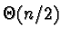

0.10.3 Huffman Compression
Huffman compression was first proposed in a paper by D. A. Huffman in
the early 1950's. Huffman coding is used in the pack
compression program and a varient called dynamic huffman coding is
used (along with LZ) in freeze.
Before compressing data, Huffman encoders first carefully analize the
input stream. In the analysis, Huffman routines carefully tally
character frequency data. That is, for each distinct character in the
input (up to 256 character byte values) a count is stored.
void count_bytes(FILE *pfInput, unsigned long *puCounts)
{
long lInputMarker;
int c;
//
// Preconditions
//
ASSERT(pfInput);
ASSERT(puCounts);
//
// Remember where the file pointer is now.
//
lInputMarker = ftell(pfInput);
ASSERT(lInputMarker >= 0);
//
// Tally the characters from here to EOF
//
while ((c = getc(pfInput)) != EOF)
counts[c]++;
//
// Put the pointer back where it was.
//
fseek(pfInput, lInputMarker, SEEK_SET );
ASSERT(ftell(pfInput) == lInputMarker);
}
In an effort to keep counts to a reasonable size, the character
frequency values are often scaled. For instance, it is often
desireable to have counts fit in one byte of data. So, by searching
for the highest count value, h and assigning it the value 0xFFthen scaling the rest of the counts by h / 0xFF all count values
should fit in one byte. In the source code I refer to scaled counts
as ``weights.''
Next Huffman algorithms build a full binary tree which will be used to
determine the codewords used to compress frequently encountered
characters. To construct the tree, first the routine creates nsmall, one-node trees (where n is the number of distinct characters
in the input stream). Each of these n trees represent a distinct
input character and have a weight cooresponding to their count tallied
in the analysis step.
The tree building process begins by selecting two nodes from the field
of candidates. The two nodes selected are the ones with the lowest
weights. These nodes are then joined into one tree. Each node
becomes a leaf off of a newly created root node. The letter values
and weights of the two nodes remain the same. The weight of the root
node is set to the sum of the weights of its two leaves. This weight
is the new weight of this three-node tree.
This process continues - the tree building process loops selecting
the two trees (with anywhere from 1 to (n - 1) nodes) with lowest
weight. The two trees selected are joined by a new root node, the
root node's weight is set, and the new tree is placed back into the
pool. The process repeats until one tree encompassing all the input
weights has been constructed. If at any point there is more than one
way to choose the two trees of smallest weight the algorithm chooses
arbitrarily. This large tree is called a Huffman tree.
Once the Huffman tree has been constructed each letter can be assigned
a codeword. The unique codeword for a given letter is computed by
traversing the Huffman tree from the root node down to the leaf
containing the letter and its weight. Because the Huffman tree is a
binary tree, each node has, at most, two children. In the path from
the root to a given leaf node, anytime the algorithm traverses to a
left child a "0" is added to the codeword while the choice of a right
child appends a "1" to the codeword. Due to the special nature of the
Huffman tree, no codeword produced will every be the prefix of
another. Also, letters appearing frequently in the input stream will
be represented by small codewords such as 01, 11, 001 (etc...) while
those that do not appear frequently will be represented by longer
codewords.
Once a mapping has been created the encoding process can begin.
During this operation the input stream is again scanned character by
character. For each character read, the equivalent codeword is
computed and appended to the output stream. In practice, a mapping
between all characters and their codewords is usually computed before
any encoding takes place. This can be accomplished recursively:
BOOL convert_tree_to_code(NODE *pnNodes, CODE *pcCodes,
unsigned int iCodeSoFar, int iBits, int iNode)
{
ASSERT(pnNodes);
ASSERT(pcCodes);
//
// If this is a leaf node we are done recursing, assign code and pop stack
//
if (iNode <= END_OF_STREAM)
{
ASSERT(iBits);
ASSERT(iCodeSoFar);
//
// Code
//
pcCodes[iNode].uCode = iCodeSoFar;
//
// Length of code
//
codes[iNode].iCodeBits = iBits;
return;
}
//
// Otherwise we are on an internal node and need to keep going
//
iCodeSoFar <<= 1;
ASSERT((iCodeSoFar | 0) == iCodeSoFar);
//
// One more bit about to be added
//
iBits++;
//
// When going right, add a zero to the code so far..
//
convert_tree_to_code(pnNodes, pcCodes, iCodeSoFar, iBits,
pnNodes[iNode].iLeftChild);
//
// When going left add a one..
//
convert_tree_to_code(pnNodes, pcCodes, iCodeSoFar | 1, iBits,
pnNodes[iNode].iRightChild);
}
Because the process of computing codewords for each input character is
slow, pre-computing helps speed up the algorithm. Since frequently
used characters tend to be represented in less than 8 bits, the
compressed output file tends to be smaller than the input.
In order to decode a Huffman compressed message the Huffman tree used
to generate the codewords must be available to the decoding process.
For this reason the encoding process often includes a representation
of the Huffman tree its output. Because the message is usually long,
such overhead may be acceptable. However, an alternative is for
encoder and decoder to agree on a preset encoding scheme based on
average frequencies of material to be transmitted. This, however,
will almost certainly lead to a less than optimal compression rate.
Because the Huffman algorithm must rescan the input stream twice it is
usually slower than alternative algorithms. The process of scanning
the input stream is an O(n) operation (where n the input size).
This occurs twice: once to create the frequency tables and once to
encode the data.
The process of constructing a Huffman tree (which occurs between the
two listed above) has a complexity based on the number of distinct
characters in the input. To build one tree from c one-node trees,
the selection process must execute (c - 1) times. This process must
search the entire pool for a tree - which is an
operation. However, pre-sorting the pool and inserting aggregate
trees at the right place in the pool speeds up the selection process
as it need only select the first two trees in the list - an O(1)process.
Each time two trees are joined the node-creation routine must execute
in order to create the root node joining the two trees. Therefore, it
also executes (c - 1) times. The average number of nodes in a
Huffman tree is approximately the number in a full binary tree with
c leaves - 2c - 1.
In practice, Huffman encoding yields good compression results.
However, it does not do as good a job as sliding window routines
(based on LZ algorithms) for average input data. It also does not
execute as quickly as LZ routines.
|